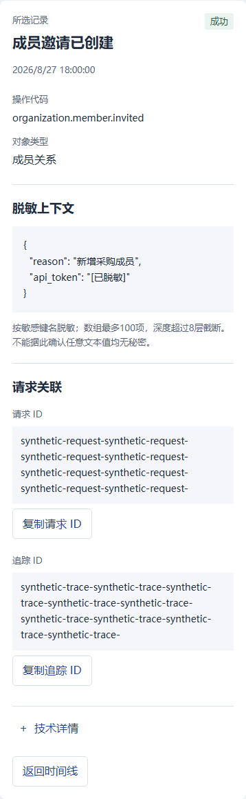
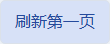
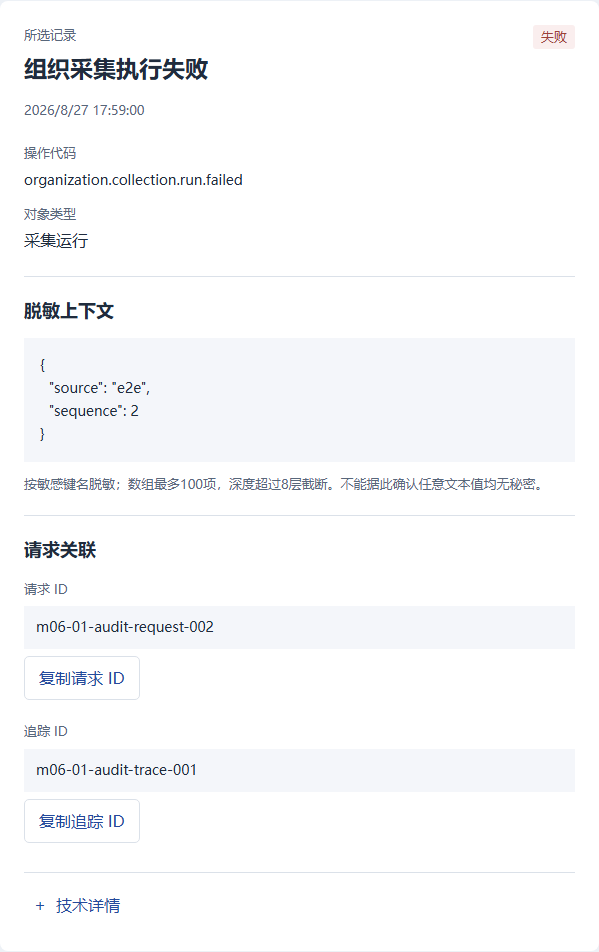
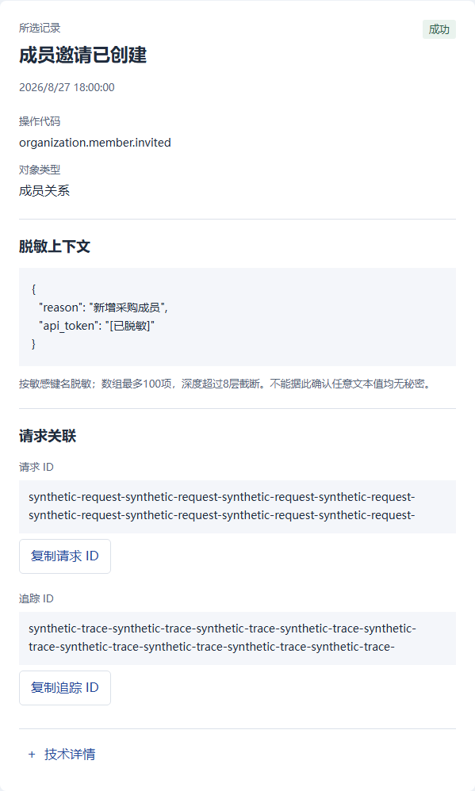

P37 控件及详情 · 全部待审
原生状态及合成详情；不是实际 Vue 或生产验收。原142图保留。
control-apply-default · 390pxchild:submitFilters
control-apply-hover · 390pxchild:submitFilters
control-apply-focus · 390pxchild:submitFilters
control-apply-pressed · 390pxchild:submitFilters
control-apply-disabled · 390pxchild:submitFilters
control-reset-default · 390pxchild:resetFilters
control-reset-hover · 390pxchild:resetFilters control-reset-focus · 390pxchild:resetFilters
control-reset-pressed · 390pxchild:resetFilters
control-reset-focus · 390pxchild:resetFilters
control-reset-pressed · 390pxchild:resetFilters control-reset-disabled · 390pxchild:resetFilters
control-advanced-closed-default · 390pxchild:native advanced details
control-reset-disabled · 390pxchild:resetFilters
control-advanced-closed-default · 390pxchild:native advanced details control-advanced-closed-hover · 390pxchild:native advanced details
control-advanced-closed-hover · 390pxchild:native advanced details control-advanced-closed-focus · 390pxchild:native advanced details
control-advanced-closed-pressed · 390pxchild:native advanced details
control-advanced-open-default · 390pxchild:native advanced details
control-advanced-open-hover · 390pxchild:native advanced details
control-advanced-closed-focus · 390pxchild:native advanced details
control-advanced-closed-pressed · 390pxchild:native advanced details
control-advanced-open-default · 390pxchild:native advanced details
control-advanced-open-hover · 390pxchild:native advanced details control-advanced-open-focus · 390pxchild:native advanced details
control-advanced-open-pressed · 390pxchild:native advanced details
control-advanced-open-focus · 390pxchild:native advanced details
control-advanced-open-pressed · 390pxchild:native advanced details control-system-closed-default · 390pxchild:systemEventsExpanded toggle
control-system-closed-hover · 390pxchild:systemEventsExpanded toggle
control-system-closed-focus · 390pxchild:systemEventsExpanded toggle
control-system-closed-pressed · 390pxchild:systemEventsExpanded toggle
control-system-open-default · 390pxchild:systemEventsExpanded toggle
control-system-open-hover · 390pxchild:systemEventsExpanded toggle
control-system-open-focus · 390pxchild:systemEventsExpanded toggle
control-system-open-pressed · 390pxchild:systemEventsExpanded toggle
control-event-selected-default · 390pxchild:choose(event)
control-event-selected-hover · 390pxchild:choose(event)
control-event-selected-focus · 390pxchild:choose(event)
control-event-selected-pressed · 390pxchild:choose(event)
control-event-unselected-default · 390pxchild:choose(event)
control-event-unselected-hover · 390pxchild:choose(event)
control-event-unselected-focus · 390pxchild:choose(event)
control-event-unselected-pressed · 390pxchild:choose(event)
control-more-default · 390pxchild:loadMore prop
control-more-hover · 390pxchild:loadMore prop
control-more-focus · 390pxchild:loadMore prop
control-more-pressed · 390pxchild:loadMore prop
control-more-disabled · 390pxchild:loadMore prop
control-refresh-default · 390pxparent:load({background:true})
control-refresh-hover · 390pxparent:load({background:true})
control-refresh-focus · 390pxparent:load({background:true})
control-refresh-pressed · 390pxparent:load({background:true})
control-refresh-disabled · 390pxparent:load({background:true})
control-retry-default · 390pxparent:load()
control-retry-hover · 390pxparent:load()
control-retry-focus · 390pxparent:load()
control-retry-pressed · 390pxparent:load()
control-system-closed-default · 390pxchild:systemEventsExpanded toggle
control-system-closed-hover · 390pxchild:systemEventsExpanded toggle
control-system-closed-focus · 390pxchild:systemEventsExpanded toggle
control-system-closed-pressed · 390pxchild:systemEventsExpanded toggle
control-system-open-default · 390pxchild:systemEventsExpanded toggle
control-system-open-hover · 390pxchild:systemEventsExpanded toggle
control-system-open-focus · 390pxchild:systemEventsExpanded toggle
control-system-open-pressed · 390pxchild:systemEventsExpanded toggle
control-event-selected-default · 390pxchild:choose(event)
control-event-selected-hover · 390pxchild:choose(event)
control-event-selected-focus · 390pxchild:choose(event)
control-event-selected-pressed · 390pxchild:choose(event)
control-event-unselected-default · 390pxchild:choose(event)
control-event-unselected-hover · 390pxchild:choose(event)
control-event-unselected-focus · 390pxchild:choose(event)
control-event-unselected-pressed · 390pxchild:choose(event)
control-more-default · 390pxchild:loadMore prop
control-more-hover · 390pxchild:loadMore prop
control-more-focus · 390pxchild:loadMore prop
control-more-pressed · 390pxchild:loadMore prop
control-more-disabled · 390pxchild:loadMore prop
control-refresh-default · 390pxparent:load({background:true})
control-refresh-hover · 390pxparent:load({background:true})
control-refresh-focus · 390pxparent:load({background:true})
control-refresh-pressed · 390pxparent:load({background:true})
control-refresh-disabled · 390pxparent:load({background:true})
control-retry-default · 390pxparent:load()
control-retry-hover · 390pxparent:load()
control-retry-focus · 390pxparent:load()
control-retry-pressed · 390pxparent:load() control-copy-request-default · 390pxchild:copy(request_id,request)
control-copy-request-hover · 390pxchild:copy(request_id,request)
control-copy-request-focus · 390pxchild:copy(request_id,request)
control-copy-request-pressed · 390pxchild:copy(request_id,request)
control-copy-request-disabled · 390pxchild:copy(request_id,request) · 仅提案
control-copy-trace-default · 390pxchild:copy(trace_id,trace)
control-copy-trace-hover · 390pxchild:copy(trace_id,trace)
control-copy-trace-focus · 390pxchild:copy(trace_id,trace)
control-copy-trace-pressed · 390pxchild:copy(trace_id,trace)
control-copy-trace-disabled · 390pxchild:copy(trace_id,trace) · 仅提案
control-technical-closed-default · 390pxchild:native technical details
control-technical-closed-hover · 390pxchild:native technical details
control-technical-closed-focus · 390pxchild:native technical details
control-technical-closed-pressed · 390pxchild:native technical details
control-technical-open-default · 390pxchild:native technical details
control-technical-open-hover · 390pxchild:native technical details
control-technical-open-focus · 390pxchild:native technical details
control-technical-open-pressed · 390pxchild:native technical details
control-clear-query-default · 390pxproposal:local search clear · 仅提案
control-clear-query-hover · 390pxproposal:local search clear · 仅提案
control-clear-query-focus · 390pxproposal:local search clear · 仅提案
control-clear-query-pressed · 390pxproposal:local search clear · 仅提案
control-filters-closed-default · 390pxproposal:mobile filter disclosure · 仅提案
control-filters-closed-hover · 390pxproposal:mobile filter disclosure · 仅提案
control-filters-closed-focus · 390pxproposal:mobile filter disclosure · 仅提案
control-filters-closed-pressed · 390pxproposal:mobile filter disclosure · 仅提案
control-filters-open-default · 390pxproposal:mobile filter disclosure · 仅提案
control-filters-open-hover · 390pxproposal:mobile filter disclosure · 仅提案
control-filters-open-focus · 390pxproposal:mobile filter disclosure · 仅提案
control-filters-open-pressed · 390pxproposal:mobile filter disclosure · 仅提案
control-back-default · 390pxproposal:mobile focus return · 仅提案
control-back-hover · 390pxproposal:mobile focus return · 仅提案
control-back-focus · 390pxproposal:mobile focus return · 仅提案
control-back-pressed · 390pxproposal:mobile focus return · 仅提案
detail-normal · 390px详情组合
detail-selected · 390px详情组合
detail-technical · 390px详情组合
detail-long · 390px详情组合
control-copy-request-default · 390pxchild:copy(request_id,request)
control-copy-request-hover · 390pxchild:copy(request_id,request)
control-copy-request-focus · 390pxchild:copy(request_id,request)
control-copy-request-pressed · 390pxchild:copy(request_id,request)
control-copy-request-disabled · 390pxchild:copy(request_id,request) · 仅提案
control-copy-trace-default · 390pxchild:copy(trace_id,trace)
control-copy-trace-hover · 390pxchild:copy(trace_id,trace)
control-copy-trace-focus · 390pxchild:copy(trace_id,trace)
control-copy-trace-pressed · 390pxchild:copy(trace_id,trace)
control-copy-trace-disabled · 390pxchild:copy(trace_id,trace) · 仅提案
control-technical-closed-default · 390pxchild:native technical details
control-technical-closed-hover · 390pxchild:native technical details
control-technical-closed-focus · 390pxchild:native technical details
control-technical-closed-pressed · 390pxchild:native technical details
control-technical-open-default · 390pxchild:native technical details
control-technical-open-hover · 390pxchild:native technical details
control-technical-open-focus · 390pxchild:native technical details
control-technical-open-pressed · 390pxchild:native technical details
control-clear-query-default · 390pxproposal:local search clear · 仅提案
control-clear-query-hover · 390pxproposal:local search clear · 仅提案
control-clear-query-focus · 390pxproposal:local search clear · 仅提案
control-clear-query-pressed · 390pxproposal:local search clear · 仅提案
control-filters-closed-default · 390pxproposal:mobile filter disclosure · 仅提案
control-filters-closed-hover · 390pxproposal:mobile filter disclosure · 仅提案
control-filters-closed-focus · 390pxproposal:mobile filter disclosure · 仅提案
control-filters-closed-pressed · 390pxproposal:mobile filter disclosure · 仅提案
control-filters-open-default · 390pxproposal:mobile filter disclosure · 仅提案
control-filters-open-hover · 390pxproposal:mobile filter disclosure · 仅提案
control-filters-open-focus · 390pxproposal:mobile filter disclosure · 仅提案
control-filters-open-pressed · 390pxproposal:mobile filter disclosure · 仅提案
control-back-default · 390pxproposal:mobile focus return · 仅提案
control-back-hover · 390pxproposal:mobile focus return · 仅提案
control-back-focus · 390pxproposal:mobile focus return · 仅提案
control-back-pressed · 390pxproposal:mobile focus return · 仅提案
detail-normal · 390px详情组合
detail-selected · 390px详情组合
detail-technical · 390px详情组合
detail-long · 390px详情组合
detail-missing · 390px详情组合
detail-empty · 390px详情组合
copy-request-copied · 390px详情组合
copy-request-failed · 390px详情组合
copy-trace-copied · 390px详情组合
copy-trace-failed · 390px详情组合
control-apply-default · 1440pxchild:submitFilters
control-apply-hover · 1440pxchild:submitFilters
control-apply-focus · 1440pxchild:submitFilters
control-apply-pressed · 1440pxchild:submitFilters
control-apply-disabled · 1440pxchild:submitFilters
control-reset-default · 1440pxchild:resetFilters control-reset-hover · 1440pxchild:resetFilters
control-reset-focus · 1440pxchild:resetFilters
control-reset-pressed · 1440pxchild:resetFilters
control-reset-hover · 1440pxchild:resetFilters
control-reset-focus · 1440pxchild:resetFilters
control-reset-pressed · 1440pxchild:resetFilters control-reset-disabled · 1440pxchild:resetFilters
control-advanced-closed-default · 1440pxchild:native advanced details
control-advanced-closed-hover · 1440pxchild:native advanced details
control-reset-disabled · 1440pxchild:resetFilters
control-advanced-closed-default · 1440pxchild:native advanced details
control-advanced-closed-hover · 1440pxchild:native advanced details control-advanced-closed-focus · 1440pxchild:native advanced details
control-advanced-closed-pressed · 1440pxchild:native advanced details
control-advanced-closed-focus · 1440pxchild:native advanced details
control-advanced-closed-pressed · 1440pxchild:native advanced details control-advanced-open-default · 1440pxchild:native advanced details
control-advanced-open-default · 1440pxchild:native advanced details control-advanced-open-hover · 1440pxchild:native advanced details
control-advanced-open-hover · 1440pxchild:native advanced details control-advanced-open-focus · 1440pxchild:native advanced details
control-advanced-open-pressed · 1440pxchild:native advanced details
control-system-closed-default · 1440pxchild:systemEventsExpanded toggle
control-system-closed-hover · 1440pxchild:systemEventsExpanded toggle
control-system-closed-focus · 1440pxchild:systemEventsExpanded toggle
control-system-closed-pressed · 1440pxchild:systemEventsExpanded toggle
control-system-open-default · 1440pxchild:systemEventsExpanded toggle
control-system-open-hover · 1440pxchild:systemEventsExpanded toggle
control-system-open-focus · 1440pxchild:systemEventsExpanded toggle
control-system-open-pressed · 1440pxchild:systemEventsExpanded toggle
control-event-selected-default · 1440pxchild:choose(event)
control-event-selected-hover · 1440pxchild:choose(event)
control-event-selected-focus · 1440pxchild:choose(event)
control-event-selected-pressed · 1440pxchild:choose(event)
control-event-unselected-default · 1440pxchild:choose(event)
control-event-unselected-hover · 1440pxchild:choose(event)
control-event-unselected-focus · 1440pxchild:choose(event)
control-event-unselected-pressed · 1440pxchild:choose(event)
control-more-default · 1440pxchild:loadMore prop
control-more-hover · 1440pxchild:loadMore prop
control-more-focus · 1440pxchild:loadMore prop
control-more-pressed · 1440pxchild:loadMore prop
control-more-disabled · 1440pxchild:loadMore prop
control-refresh-default · 1440pxparent:load({background:true})
control-refresh-hover · 1440pxparent:load({background:true})
control-refresh-focus · 1440pxparent:load({background:true})
control-refresh-pressed · 1440pxparent:load({background:true})
control-advanced-open-focus · 1440pxchild:native advanced details
control-advanced-open-pressed · 1440pxchild:native advanced details
control-system-closed-default · 1440pxchild:systemEventsExpanded toggle
control-system-closed-hover · 1440pxchild:systemEventsExpanded toggle
control-system-closed-focus · 1440pxchild:systemEventsExpanded toggle
control-system-closed-pressed · 1440pxchild:systemEventsExpanded toggle
control-system-open-default · 1440pxchild:systemEventsExpanded toggle
control-system-open-hover · 1440pxchild:systemEventsExpanded toggle
control-system-open-focus · 1440pxchild:systemEventsExpanded toggle
control-system-open-pressed · 1440pxchild:systemEventsExpanded toggle
control-event-selected-default · 1440pxchild:choose(event)
control-event-selected-hover · 1440pxchild:choose(event)
control-event-selected-focus · 1440pxchild:choose(event)
control-event-selected-pressed · 1440pxchild:choose(event)
control-event-unselected-default · 1440pxchild:choose(event)
control-event-unselected-hover · 1440pxchild:choose(event)
control-event-unselected-focus · 1440pxchild:choose(event)
control-event-unselected-pressed · 1440pxchild:choose(event)
control-more-default · 1440pxchild:loadMore prop
control-more-hover · 1440pxchild:loadMore prop
control-more-focus · 1440pxchild:loadMore prop
control-more-pressed · 1440pxchild:loadMore prop
control-more-disabled · 1440pxchild:loadMore prop
control-refresh-default · 1440pxparent:load({background:true})
control-refresh-hover · 1440pxparent:load({background:true})
control-refresh-focus · 1440pxparent:load({background:true})
control-refresh-pressed · 1440pxparent:load({background:true})
control-refresh-disabled · 1440pxparent:load({background:true})
control-retry-default · 1440pxparent:load() control-retry-hover · 1440pxparent:load()
control-retry-hover · 1440pxparent:load() control-retry-focus · 1440pxparent:load()
control-retry-focus · 1440pxparent:load() control-retry-pressed · 1440pxparent:load()
control-copy-request-default · 1440pxchild:copy(request_id,request)
control-copy-request-hover · 1440pxchild:copy(request_id,request)
control-copy-request-focus · 1440pxchild:copy(request_id,request)
control-copy-request-pressed · 1440pxchild:copy(request_id,request)
control-copy-request-disabled · 1440pxchild:copy(request_id,request) · 仅提案
control-copy-trace-default · 1440pxchild:copy(trace_id,trace)
control-copy-trace-hover · 1440pxchild:copy(trace_id,trace)
control-copy-trace-focus · 1440pxchild:copy(trace_id,trace)
control-copy-trace-pressed · 1440pxchild:copy(trace_id,trace)
control-copy-trace-disabled · 1440pxchild:copy(trace_id,trace) · 仅提案
control-technical-closed-default · 1440pxchild:native technical details
control-technical-closed-hover · 1440pxchild:native technical details
control-technical-closed-focus · 1440pxchild:native technical details
control-technical-closed-pressed · 1440pxchild:native technical details
control-technical-open-default · 1440pxchild:native technical details
control-technical-open-hover · 1440pxchild:native technical details
control-technical-open-focus · 1440pxchild:native technical details
control-technical-open-pressed · 1440pxchild:native technical details
control-clear-query-default · 1440pxproposal:local search clear · 仅提案
control-clear-query-hover · 1440pxproposal:local search clear · 仅提案
control-clear-query-focus · 1440pxproposal:local search clear · 仅提案
control-clear-query-pressed · 1440pxproposal:local search clear · 仅提案
detail-normal · 1440px详情组合
detail-selected · 1440px详情组合
control-retry-pressed · 1440pxparent:load()
control-copy-request-default · 1440pxchild:copy(request_id,request)
control-copy-request-hover · 1440pxchild:copy(request_id,request)
control-copy-request-focus · 1440pxchild:copy(request_id,request)
control-copy-request-pressed · 1440pxchild:copy(request_id,request)
control-copy-request-disabled · 1440pxchild:copy(request_id,request) · 仅提案
control-copy-trace-default · 1440pxchild:copy(trace_id,trace)
control-copy-trace-hover · 1440pxchild:copy(trace_id,trace)
control-copy-trace-focus · 1440pxchild:copy(trace_id,trace)
control-copy-trace-pressed · 1440pxchild:copy(trace_id,trace)
control-copy-trace-disabled · 1440pxchild:copy(trace_id,trace) · 仅提案
control-technical-closed-default · 1440pxchild:native technical details
control-technical-closed-hover · 1440pxchild:native technical details
control-technical-closed-focus · 1440pxchild:native technical details
control-technical-closed-pressed · 1440pxchild:native technical details
control-technical-open-default · 1440pxchild:native technical details
control-technical-open-hover · 1440pxchild:native technical details
control-technical-open-focus · 1440pxchild:native technical details
control-technical-open-pressed · 1440pxchild:native technical details
control-clear-query-default · 1440pxproposal:local search clear · 仅提案
control-clear-query-hover · 1440pxproposal:local search clear · 仅提案
control-clear-query-focus · 1440pxproposal:local search clear · 仅提案
control-clear-query-pressed · 1440pxproposal:local search clear · 仅提案
detail-normal · 1440px详情组合
detail-selected · 1440px详情组合
detail-technical · 1440px详情组合
detail-long · 1440px详情组合
detail-missing · 1440px详情组合
detail-empty · 1440px详情组合
copy-request-copied · 1440px详情组合
copy-request-failed · 1440px详情组合
copy-trace-copied · 1440px详情组合
copy-trace-failed · 1440px详情组合